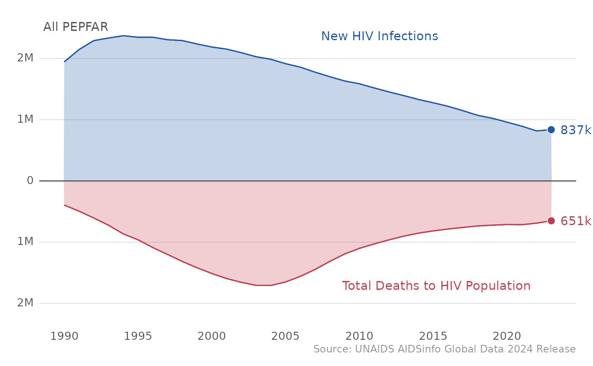
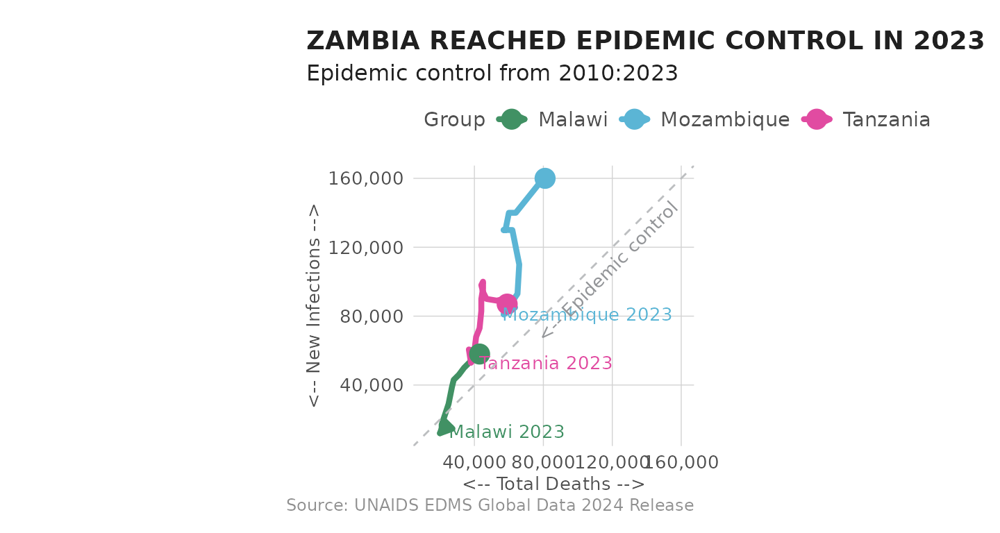

Introduction
PEPFAR defines HIV epidemic control as the “point at which the total
number of new HIV infections falls below the total number of deaths from
all causes among HIV-infected individuals, with both declining.” UNAIDS
estimates this point using the Incidence-Mortality Ration (IMR).
Epidemic control indicators are all available from the data available in
load_unaids, which also includes a column called
achv_epi_control which is a logical variable about whether
the country had met these three epidemic control criteria in a given
year (for all age and sex). This information can be plotted with a built
in function, plot_epi_trends, which we will demonstrate
below.
Load dependencies
In addition to mindthegap make sure you have
glitr installed. This does not need to be loaded into your
session, but is needed to run the plots. Dependent packages are
typically installed from CRAN, but since our packages are on rOpenSci,
they are not installed.
install.packages(c('glitr', 'patchwork'), repos = c('https://usaid-oha-si.r-universe.dev', 'https://cran.r-project.org/'))Epidemic Control Plotting Function
First, let’s take a look at the plot_epi_trends function
in action: to use this function, first load the estimates data from the
mindthegap package and specify your PEPFAR country of
interest in the sel_cntry parameter of the
plot_epi_trends function.
df_unaids <- load_unaids()
plot_epi_trends(df_unaids, sel_cntry = "Kenya") The subtitle includes the epi control information for a given year - the
direction of total death and new infections, both of which should be
declining, and the IMR, which should be below 1.
The subtitle includes the epi control information for a given year - the
direction of total death and new infections, both of which should be
declining, and the IMR, which should be below 1.
In case you want to compare epidemic control across countries, the
plot_epi_trends function allows for you to list several
countries of interest in the sel_cntry parameter as
well.
plot_epi_trends(df_unaids, c("Kenya","Tanzania"))
In addition to looking at epidemic control at the country level, we
can also see trends across all of PEPFAR by just using the
plot_epi_trends() function, as “ALL PEPFAR” is the default
country in the sel_cntry parameter. Be aware that we are
summing up point estimates across all PEPFAR countries and these data
points have not be estimated and released by UNAIDS.
plot_epi_trends(df_unaids)
This function makes it easy to generate plots on your own for countries of interest. Let’s peek under the hood and see how the function works to munge the data and create the plots.
Race to the bottom
While time-series data is often presented linearly, with time on the x-axis, we can also use a connected scatterplot to illustrate a country’s journey toward epidemic control. A connected scatterplot combines elements of both scatterplots and line charts, providing a dynamic view of the relationship between two variables over time.
In the context of epidemic control, each data point represents a combination of total deaths (x-axis) and new HIV infections (y-axis) for a given year. These points are connected chronologically to show how the relationship between deaths and new infections evolves over time.
The goal of epidemic control can be visualized as a 45-degree line, indicating balance between the two indicators. When the trend line moves closer to zero on both axes, it suggests progress toward fewer deaths and fewer new infections. If the connected line trends towards zero, it indicates that the country is moving in a positive direction—toward reduced mortality and reduced spread of HIV.
Points that fall closer to the total deaths axis indicate periods
when epidemic control is being approached or maintained. Let’s take an
example from Zambia to see this relationship in action. Using the
plot_connected_scatter() we can visualize Zambia’s progress
towards epi control.
plot_connected_scatter(df_unaids, sel_cntry = "Zambia") +
labs(title = toupper("Zambia reached epidemic control in 2023"))
The plot_connected_scatter() can also take multiple country
arguments to make comparison plots. While the function will
automatically scale the axes for you, it is recommended comparing
countries with similar mangitude of epidemic control metrics. Comparing
South Africa to Rwanda will result in a graphic that is dominated by the
sheer size of the epidemic in South Africa. Below, we show the progress
of Mozambique, Tanzania and Malawi. Coincidentally, each country appears
to be on similar paths, but at different points in time.
plot_connected_scatter(df_unaids, sel_cntry = c("Malawi", "Mozambique", "Tanzania")) +
labs(title = toupper("Zambia reached epidemic control in 2023"))
The race to the bottom plots can also be combined together if countries naturally fall into different classes. Below, countries are sorted into large and small groups to depict epidemic control conditioned on a country’s progress to the 95s.